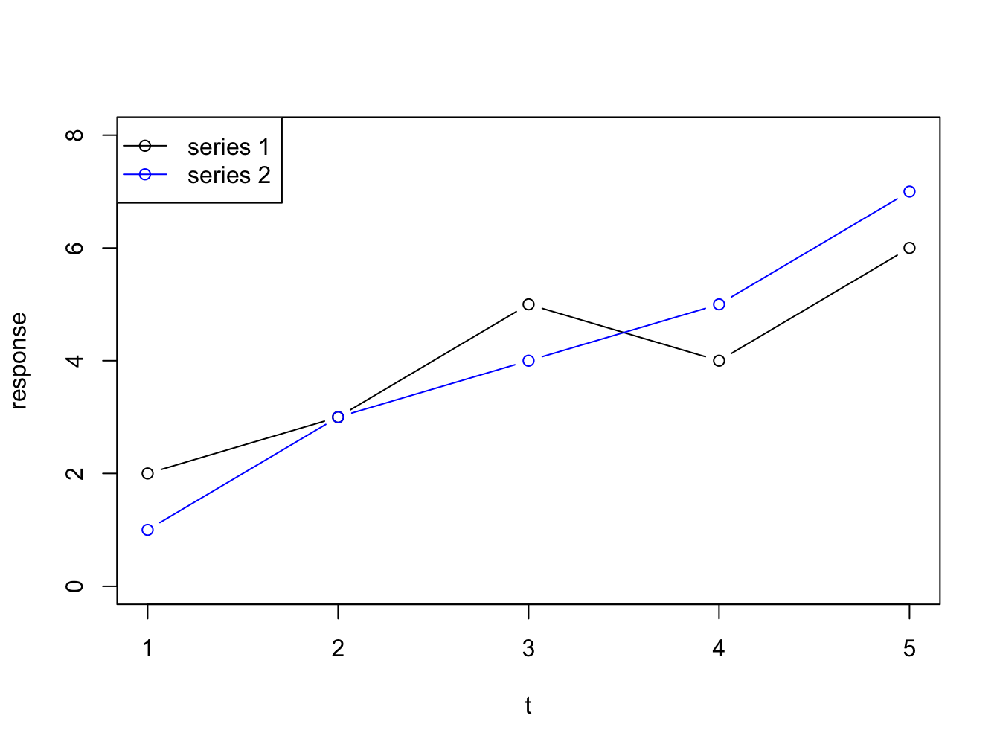

Chapter 8 Exercises
This chapter only contains exercises. The solutions are in the next chapter which has a numbering parallel to this one.
8.1 Basic R
Plotting rules
With all plots, take care to adhere to the rules regarding titles and other decorations. Tip: the site Quick-R has nice detailed information with examples on the different plot types and their configuration. Especially the section on plotting is helpful for these assignments.
8.1.1 Stair walking and heart rate
The vectors below hold data for a staircase walking experiment. A subject of normal weight and height was asked to ascend a (long) stairs wearing a heart-rate monitor. The subjects’ heart was registered for different step heights. Create a line plot showing the dependence of heart rate (y axis) on stair height (x axis).
#number of steps on the stairs
stair_height <- c(0, 5, 10, 15, 20, 25, 30, 35)
#heart rate after ascending the stairs
heart_rate <- c(66, 65, 67, 69, 73, 79, 86, 97)8.1.2 More subjects
The experiment from the previous question was extended with three more subjects. One of these subjects was like the first of normal weight, whereas the two others were obese. The data are given below. Create a single scatter plot with connector lines between the points showing the data for all four subjects. Give the normal-weighted subjects a green line and symbol and the obese subjects a red line and symbol.
You can add new data series to a plot by using the points(x, y) function. Use the ylim() function to adjust the Y-axis range.
#number of steps on the stairs
stair_height <- c(0, 5, 10, 15, 20, 25, 30, 35)
#heart rates for subjects with normal weight
heart_rate_1 <- c(66, 65, 67, 69, 73, 79, 86, 97)
heart_rate_2 <- c(61, 61, 63, 68, 74, 81, 89, 104)
#heart rates for obese subjects
heart_rate_3 <- c(58, 60, 67, 71, 78, 89, 104, 121)
heart_rate_4 <- c(69, 73, 77, 83, 88, 96, 102, 127)8.1.3 Chickens on a diet
The body weights of chicks were measured at birth and every second day thereafter until day 20. They were also measured on day 21. In the experiment there were four groups of chicks on different protein diets. Here are the data for the first four chicks. Chick one and two were on diet 1 and chick three and four were on diet 2. Create a single line plot showing the data for all four chicks. Give each chick its own color.
# chick weight data
time <- c(0, 2, 4, 6, 8, 10, 12, 14, 16, 18, 20, 21)
chick_1 <- c(42, 51, 59, 64, 76, 93, 106, 125, 149, 171, 199, 205)
chick_2 <- c(40, 49, 58, 72, 84, 103, 122, 138, 162, 187, 209, 215)
chick_3 <- c(42, 53, 62, 73, 85, 102, 123, 138, 170, 204, 235, 256)
chick_4 <- c(41, 49, 61, 74, 98, 109, 128, 154, 192, 232, 280, 290)8.1.4 Chicken bar plot
With the data from the previous question, create a bar plot of the maximum weights of the chicks.
8.1.5 Discoveries
The R language comes with a wealth of datasets for you to use as practice materials. We will see several of these. One of these datasets is The Time-Series dataset called discoveries holding the numbers of “great” inventions and scientific discoveries in each year from 1860 to 1959. Type its name in the console to see it. Create plot(s) answering these questions:
A
What is the number of discoveries per year? Use the barplot() and table() functions for this.
B
What is the 5-number summary of discoveries per year?
C
What is the trend over time for the numbers of discoveries per year?
PS: This is actually not a simple vector but a vector with some time-related attributes. It is called a Time-Series (a ts class), but this does not really matter for this assignment.
8.1.6 Lung cancer
The R datasets package has three related timeseries datasets relating to lung cancer deaths. These are ldeaths, mdeaths and fdeaths for total, male and female deaths respectively. Create a line plot showing the monthly mortality holding all three of these datasets. Use the legend() function to add a legend to the plot, as demonstrated in this example:
t <- 1:5
y1 <- c(2, 3, 5, 4, 6)
y2 <- c(1, 3, 4, 5, 7)
plot(t, y1, type = "b", ylab = "response", ylim = c(0, 8))
points(t, y2, col = "blue", type = "b")
legend("topleft", legend = c("series 1", "series 2"), col = c("black", "blue"), pch = 1, lty = 1)
A
Create the mentioned line plot. Do you see trends and/or patterns and if so, can you explain these?
B
Create a combined boxplot of the three time-series. Are there outliers? If so, can you figure out when this occurred?
8.2 Complex datatypes
This section serves you some datatype challenges.
8.2.1 Creating factors
A
Given this vector:
animal_risk <- c(2, 4, 1, 1, 2, 4, 1, 4, 1, 1, 2, 1)and these possible levels: 1: harmless 2: risky 3: dangerous 4: deadly
Create a factor from this data and then barplot the result.
B
Given this data, a simulation of wealth distribution of “poor”, “middle class”, “wealthy” "rich:
set.seed(1234)
wealth_male <- sample(x = letters[1:4],
size = 1000,
replace= TRUE,
prob = c(0.7, 0.17, 0.12, 0.01))
wealth_female <- sample(x = letters[1:4],
size = 1000,
replace= TRUE,
prob = c(0.8, 0.15, 0.497, 0.003))Create a factor from these two and report the cumulative percentage of its individual levels starting at the most abundant level, combined for male and female. Hint: use table() and prop.table().
Next, create a side-by-side barplot of this data. Don’t forget the legend!
8.2.2 A dictionary with a named vector
Almost all programming languages know the (hash)map / dictionary data structure storing so-called “key-and-value” pairs. They make it possible to “look up” the value belonging to a “key”. That is where the term dictionary comes from. A dictionary holds keys (the words) and their meaning (values). R does not have a dictionary type but you could make a dict-like structure using a vector with named elements. Here follows an example.
If I wanted to create and use a DNA codon translation table, and use it to translate a piece of DNA, I could do something like what is shown below (there are only 4 of the 64 codons included). See if you can figure out what is going on there
## define codon table as named vector
codons <- c("Gly", "Pro", "Lys", "Ser")
names(codons) <- c("GGA", "CCU", "AAA", "AGU")
## the DNA to translate
my_DNA <- "GGACCUAAAAGU"
my_prot <- ""
## iterate the DNA and take only every position
for (i in seq(1, nchar(my_DNA), by=3)) {
codon <- substr(my_DNA, i, i+2);
my_prot <- paste(my_prot, codons[codon])
}
print(my_prot)## [1] " Gly Pro Lys Ser"A
Make a modified copy of this code chunk in such a way that no spaces are present between the amino acid residues (use help on paste() to figure this out) and that single-letter codes of amino acids are used instead of three-letter codes.
B
[Challenge] Here is a vector called nuc_weights. It holds the weights for the nucleotides A, C, G and U respectively. Make it a named vector, iterate my_DNA from the above code chunk and calculate its molecular weight.
nuc_weights <- c(491.2, 467.2, 507.2, 482.2)8.2.3 airquality
The airquality dataset is also one of the datasets included in the datasets package. We’ll explore this for a few questions.
A
Create a scatterplot of Temperature as a function of Solar radiation. Is there, as you might naively expect, a strong correlation? You could use cor.test() to find out. Add a linear model using lm() to extend your plot.
B
Create a boxplot-series of Temp as a function of Month (use ?boxplot to find out how this works). What appears to be the warmest month?
C
What date (day/month) has the lowest recorded temperature? Which the highest? Please give temperature values in Celsius, not Fahrenheit! (Yes, this is an extra challenge!)
D
Create a histogram of the wind speeds, and add a thick blue vertical line for the value of the mean and a fat red line for the median (use abline() for this).
E
Use the pairs() function with argument panel = panel.smooth to plot all pairwise correlations between Ozone, Solar radiation, Wind and Temperature. Which pair shows the strongest correlation in your opinion? Verify this using the cor() function after removing incomplete cases. Create a separate well annotated scatterplot of this pair.
8.2.4 Bird observations
You will explore a bird observation dataset, downloaded from GOLDEN GATE AUDUBON SOCIETY. This file lists bird observations collected by this bird monitoring group in the San Francisco Bay Area. I already cleaned it a bit and placed it here: data/Observations-Data-2014.csv.
You can download it as follows:
file_name <- "Observations-Data-2014.csv"
remote_url <- paste0("https://raw.githubusercontent.com/MichielNoback/davur1_gitbook/master/data/", file_name)
download.file(url = remote_url, destfile = file_name)Load the observation data into R and assign it to a variable called bird_obs.
From here on, it is assumed that you have the dataframe bird_obs loaded. This series of exercises deals with cleaning and transforming data, and exploring a cleaned dataset using basic plotting techniques and descriptive statistics.
A
First, explore the raw data as they are.
- What data on bird observations were recorded (i.e. what kind of variables do you have)?
- What did R do to the original column names?
- Are all column names clear to you?
B
How many bird observations were recorded?
C
The column holding observation “Number” is actually not a number. Into what type has R converted it?
D
Convert the “Number” column into an integer column using as.integer(), but assign it to a new column called “Count” (i.e. do not overwrite the original values). Compare the first 50 values or so of these two columns. What happened to the data? Is this OK?
E
The previous question has shown that converting factors to numbers is a bit dangerous. It is often easiest to convert characters to numbers. The best way to do this is by using the as.is = c(<column indices>) argument for the read.table() function.
So, which columns should be loaded as real factor data and which as plain character data? Use read.table() and the as.is argument to reload the data, and then transform the Number column to integer again as Count.
F
Compare the first 50 values of the Number and Count columns again. Has the conversion succeeded? How many Number values could not be transformed into an integer value? Hint: use is.na()
G
Explore the sighting counts:
- What is the maximum number of birds in a single sighting? (Use max() and which() or is.na() to solve this)
- What is the mean sighting count
- What is the median of the sighting count
H
Is the Count variable a normal distributed value? You can use hist(...), table() or plot(density(...)) to explore this further.
I
Explore the species constitution:
- How many different species were recorded?
- How many genera do they constitute?
- What species from the genus “Puffinus” have been observed?
Hint: use the function unique() here.
J [Challenge]
This is a challenge exercise for those who like to grind their brains! Think of a strategy to “rescue” the NAs that appear after transforming “Number” to “Count”. Hint: use gsub() orgrep()
8.3 Regular Expressions
8.3.1 Restriction enzymes
A
The restriction enzyme PacI has the recognition sequence “TTAATTAA”. Define (at least) three alternative regex patterns that will catch these sites.
B
The restriction enzyme SfiI has the recognition sequence “GGCCNNNNNGGCC”. Define (at least) three alternative regex patterns that will catch these sites.
8.3.2 Prosite Patterns
A
The Prosite pattern PS00211 (ABC-transporter-1; https://prosite.expasy.org/PS00211) has the pattern:
“[LIVMFYC]-[SA]-[SAPGLVFYKQH]-G-[DENQMW]-[KRQASPCLIMFW]-[KRNQSTAVM]-[KRACLVM]-[LIVMFYPAN]-{PHY}-[LIVMFW]-[SAGCLIVP]-{FYWHP}-{KRHP}-[LIVMFYWSTA].”
Translate it into a regex pattern. Info on the syntax is here: https://prosite.expasy.org/prosuser.html#conv_pa
B
The Prosite pattern PS00018 (EF-hand calcium-binding domain; https://prosite.expasy.org/PS00018) has the pattern: “D-{W}-[DNS]-{ILVFYW}-[DENSTG]-[DNQGHRK]-{GP}-[LIVMC]-[DENQSTAGC]-x(2)- [DE]-[LIVMFYW].” Translate it into a regex pattern.
You could exercise more by simply browsing Prosite. Test your pattern by fetching the proteins referred to within the Prosite pattern details page.
8.3.3 Fasta Headers
The fasta sequence format is a very common sequence file format used in molecular biology. It looks like this (I omitted most of the actual protein sequences for better representation):
>gi|21595364|gb|AAH32336.1| FHIT protein [Homo sapiens]
MSFRFGQHLIK...ALRVYFQ
>gi|15215093|gb|AAH12662.1| Fhit protein [Mus musculus]
MSFRFGQHLIK...RVYFQA
>gi|151554847|gb|AAI47994.1| FHIT protein [Bos taurus]
MSFRFGQHLIK...LRVYFQAs you can see there are several distinct elements within the Fasta header which is the description line above the actual sequence: one or more database identification strings, a protein description or name and an organism name. Study the format - we are going to extract some elements from these fasta headers using the stringr package. Install it if you don’t have it yet.
Here is a small example:
library(stringr)
hinfII_re <- "GA[GATC]TC"
sequences <- c("GGGAATCC", "TCGATTCGC", "ACGAGTCTA")
str_extract(string = sequences,
pattern = hinfII_re)## [1] "GAATC" "GATTC" "GAGTC"Function str_extract() simply extracts the exact match of your regex (shown above). On the other hand, function str_match() supports grouping capture through bounding parentheses:
phones <- c("+31-6-23415239", "+49-51-55523146", "+31-50-5956566")
phones_re <- "\\+(\\d{2})-(\\d{1,2})" #matching country codes and area codes
matches <- str_match(phones, phones_re)
matches## [,1] [,2] [,3]
## [1,] "+31-6" "31" "6"
## [2,] "+49-51" "49" "51"
## [3,] "+31-50" "31" "50"Thus, each set of parentheses will yield a column in the returned matrix. Simply use its column index to get that result set:
matches[, 2] ##the country codes## [1] "31" "49" "31"Now, given the fasta headers in ./data/fasta_headers.txt
which you can simply load into a character vector using readLines(), extract the following.
A
- Extract all complete organism names.
- Extract all species-level organism names (omitting subspecies and strains etc).
B
Extract all first database identifiers. So in this header element >gi|224017144|gb|EEF75156.1| you should extract only gi|224017144
C
Extract all protein names/descriptions.
8.4 Scripting
This section serves you some exercises that will help you improve your function-writing skills.
8.4.1 Illegal reproductions
As an exercise, you will re-invent the wheel here for some statistical functions.
The mean
Create a function, my_mean(), that duplicates the R function mean(), i.e. calculates and returns the mean of a vector of numbers, without actually using mean().
Standard deviation
Create a function, my_sd(), that duplicates the R function sd(), i.e. calculates and returns the standard deviation of a vector of numbers, without actually using sd().
Median
[Challenge] Create a function, my_median(), that duplicates the R function median(), i.e. calculates and returns the median of a vector of numbers. This is actually a bit harder than you might expect. Hint: use the sort() function.
8.4.2 Interquantile ranges
Create a function that will calculate a custom “interquantile range”. The function should accept three arguments: a numeric vector, a lower quantile and an upper quantile. It should return the difference (range) between these two quantile values. The lower quantile should default to 0 and the higher to 1, thus returning max(x) minus min(x). The function therefore has this “signature”:
interquantile_range <- function(x, lower = 0, higher = 100) {}Perform some tests on the arguments to make a robust method: are all arguments numeric?
To test you method, you can compare interquantile_range(some_vector, 0.25, 0.75) with IQR(some_vector) - they should be the same.
8.4.3 Vector distance
Create a function, distance(p, q), that will calculate and return the Euclidean distance between two vectors of equal length. A numeric vector can be seen as a point in multidimensional space. Euclidean distance is defined as
\[d(p, q) = \sqrt{\sum_{i = 1}^{n}(q_i-p_i)^2}\]
Where p and q are the two vectors and n the length of the two vectors.
You should first perform a check whether the two vectors are of equal length and both of type numeric or integer. If not, the function should abort with an appropriate error message.
Other distance measures
Extend the function of the previous assignment in such a way that a third argument is accepted, method =, which defaults to “euclidean”. Other possible distance measures are “Manhattan” (same as “city block” and “taxicab”) and Pearson correlation. Look the equations for these up in Wikipedia or some other place.
8.4.4 G/C percentage of DNA
[Challenge XL] Create a function, GC_perc(), that calculates and returns the GC percentage of a DNA or RNA sequence. Accept as input a sequence and a flag -strict- indicating whether other characters are accepted than core DNA/RNA (GATUC). If strict = FALSE, the percentage of other characters should be reported using a warning() call. If strict = TRUE, the function should terminate with an error message. Use stop() for this. strict should default to TRUE. NOTE, usage of strict can complicate things, so start with the core functionality!
You can use strsplit() or substr() to get hold of individual sequence characters.
8.5 Function apply and its relatives
In this section you will encounter some exercises revolving around the different flavors of apply.
8.5.1 Whale selenium
On the course website under Resources you will find a link to file whale_selenium.txt. You could download it into your working directory manually or use download.file() to obtain it. However, there is a third way to get its contents without actually downloading it as a local copy. You can read it directly using read.table() as shown here.
whale_sel_url <- "https://raw.githubusercontent.com/MichielNoback/davur1/gh-pages/exercises/data/whale_selenium.txt"
whale_selenium <- read.table(whale_sel_url,
header = T,
row.names = 1)Note: when you are going to load a file many times it is probably better to store a local copy.
A
Report the means of both columns using apply().
B
Report the standard deviation of both columns, using apply()
C
Report the standard error of the mean of both columns, using apply() The SEM is calculated as \[\frac{sd}{\sqrt{n}}\] where \(sd\) is the sample standard deviation and \(n\) the number of measurements. You should create the function calculating this statistic yourself.
D
Using apply(), calculate the ratio of \(Se_{tooth} / Se_{liver}\) and attach it to the whale_selenium dataframe as column ratio. Create a histogram of this ratio.
E
Using print() and paste(), report the mean and the standard deviation of the ratio column, but do this with an inline expression, e.g. an expression embedded in the R markdown paragraph text.
8.5.2 ChickWeight
This exercise revolves around the ChickWeight dataset of the built-in datasets package.
A
Report the number of chickens used in the experiment.
B
Use aggregate() to get the mean weight of the chickens for the different Diets.
C
Use coplot() to plot a panel with weight as function of Time, split over Diet.
D
Add a column called weight_gain to the dataframe holding values for the weight gain since the last measurement. Take special care with rows marking the boundaries between individual chickens! You could consider using a traditional for loop here.
In the next course, we’ll see a more efficient way of doing this.
E
Split the weight_gain column on Diet and report the mean, median and standard deviation for each diet.
If you were not successful in the previous question, load and attach the data from file ChickWeight_weight_gain.Rdata downloadable from https://github.com/MichielNoback/davur1_gitbook/raw/master/data/ChickWeight_weight_gain.Rdata. You can use this code chunk for downloading and loading the data into variable stored_weight_gain. Don’t forget to attach the column to the data frame!
local_file <- "ChickWeight_weight_gain.Rdata"
download.file(paste0("https://github.com/MichielNoback/davur1_gitbook/raw/master/data/", local_file), local_file)
load(local_file)F
Create a (single-panel) boxplot for weight gain, split over Diet. Hint: read the boxplot() help page!
8.5.3 Food constituents
The food constituents dataset holds information on ingredients for different foods. Individual foods are simply marked with an id.
A
Load the data and report the different food categories (Type). Also report the numbers of entries for each Type.
B
What is the mean energy content of chocolate foods?
C
What is the food category with the highest mean fat content?
D
What food category has the highest mean energy content, and which has the lowest?
E
[Challenge] Create a boxplot showing the difference in sugar content between drink and solid food.
F
Assuming both unsaturated fats and sugar are bad for you, what food category do you consider the worst? Think of a means to answer this, explain it and carry it out.
8.5.4 Bird observations revisited
This exercise revisits the bird observations dataset. You can download it here. (Re)load the dataset.
A
Report the number of observations per County. Use both a textual as a barplot representation. With the barplot, you should order the bars according to observation numbers.
B
Report the number of observations per Observer.1 but only for observers with more than 10 observations, ordered from high to low observation count. Use order() to achieve this.
C
Which observer has the highest number of observations listed (and how many is that)?
D
Report the different observed species (using Common.name) for each genus. [Challenge] Report only the 5 Genera with the highest number of observed species.
E
[Challenge] Create a Dataframe holding the number of birds per day (use Date.start) and plot it with date on the x-axis and number of birds on the y-axis. Hint: use as.Date() to convert the character date to a real date field. See this page how you can do that Date Values.